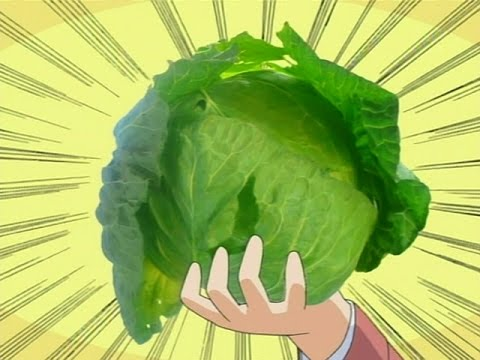
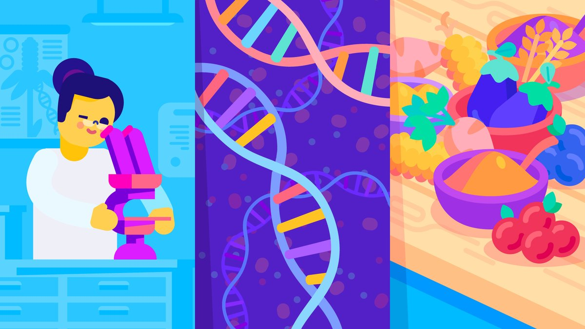
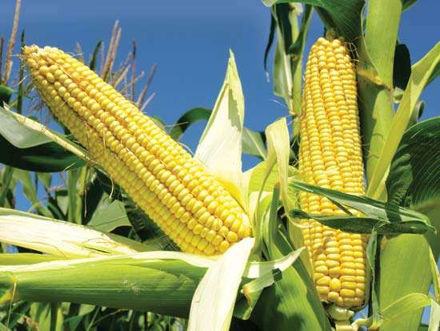

GMO vs. GE
- stuff stuff stuff stuff stuff stuff stuff stuff stuff
- stuff stuff stuff stuff stuff stuff stuff stuff stuff
- stuff stuff stuff stuff stuff stuff stuff stuff stuff
- stuff stuff stuff stuff stuff stuff stuff stuff stuff
- stuff stuff stuff stuff stuff stuff stuff stuff stuff
- stuff stuff stuff stuff stuff stuff stuff stuff stuff

Transgenic vs. Cisgenic
- stuff stuff stuff stuff stuff stuff stuff stuff stuff
- stuff stuff stuff stuff stuff stuff stuff stuff stuff
- stuff stuff stuff stuff stuff stuff stuff stuff stuff
- stuff stuff stuff stuff stuff stuff stuff stuff stuff
- stuff stuff stuff stuff stuff stuff stuff stuff stuff
- stuff stuff stuff stuff stuff stuff stuff stuff stuff

Categories
- Herbicide resistance
- An organism that is resisted by killing weed usual used in large farm
- Some of the positives are that fewer chemicals are used
- Problems without it the chemical will overflow which will cause problems in the environment
- Pest Resistance
- The plant has a gene implanted into which is bacteria at the end will kill any insects when it touches the plant
- Virus Resistance
- That protects it from any virus that tries to destroy the plant
- With having GMO it protects the plant from virus
- Changed Metabolism
- Change the type of sugars the plant mades
- For example to improve the plant for it to be make it less likely to bruise
